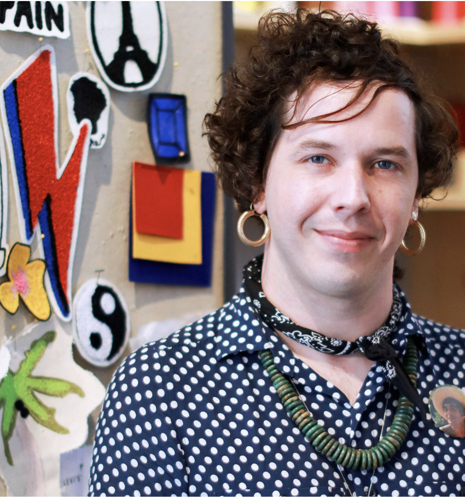

Research with practitioners
A focused one-hour session with Luke Good — a working tailor — mapped the day-to-day rituals of the team and the moments where they meet the customer.
A one-hour conversation with Luke Good — a tailor at a leading clothing brand — surfaced the daily workflow of the tailoring team and shaped a tool that now lives in seven flagship stores worldwide.
An in-store tool built around the tailoring team's real workflow — launched in seven flagship stores, starting in Shanghai.
A focused one-hour session with Luke Good — a working tailor — mapped the day-to-day rituals of the team and the moments where they meet the customer.
We turned research into concepts fast, using rough wireframes to explore early ideas and lock alignment across the wider team.
A movement study validated the interactions in physical space — proving the tool worked the way tailors actually move on the floor.
The work started with a single, deep conversation. One hour with Luke Good, a tailor at a leading clothing brand, gave us a clear read on the daily practices of his team and the way they interact with customers in-store.
We moved from insight to idea through Sketchin Sessions — rapid-fire wireframe rounds that let us explore concepts in the open and get the team aligned before pixels got precious. As the direction sharpened, we ran a movement study to validate the interactions in physical space, then rolled out the final app across seven flagship stores worldwide — starting in Shanghai.

One hour with a working tailor shaped the entire product.
Wireframe rounds that turned ideas into shared direction.
Interactions validated the way tailors actually work.
Global roll-out, starting in Shanghai.